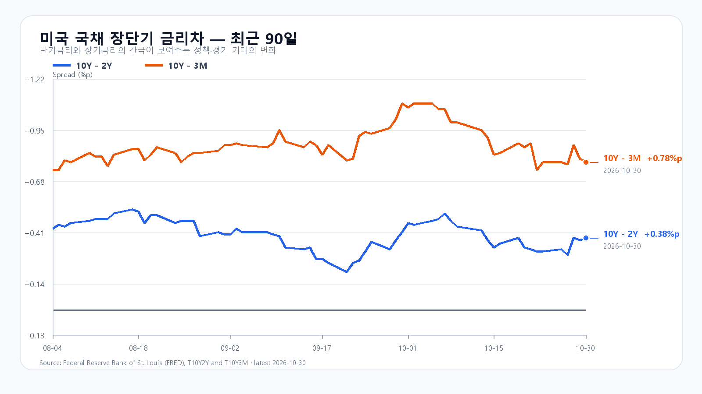
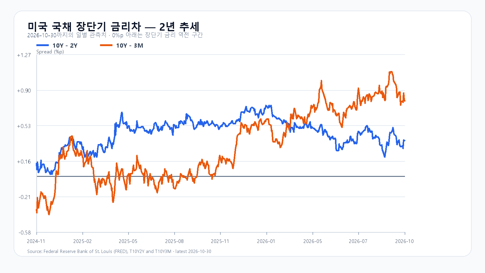

미국 반도체주가 크게 내린 뒤 코스피도 하락 출발했습니다. Intel의 전망 부진이 국내 시장에 먼저 반영된 만큼 미국장의 낙폭을 새로운 충격으로 전부 더하기보다, 5,600선 부근에서 반도체 매도와 매수의 균형이 어떻게 바뀌는지 살펴야 합니다.
반도체 매도와 이미 반영된 충격
10월 30일 미국 정규장에서 SOXX는 8.24%, SMH는 6.98% 하락했습니다. Nvidia는 4.22%, AMD는 10.88%, Micron은 5.30%, Broadcom은 5.48% 내렸습니다. 같은 날 한국장은 미국 정규장에 앞서 Intel의 실적 전망을 소화하며 3.48% 하락했습니다. 미국 종가의 하락을 모두 오늘 새로 발생한 충격으로 계산할 수 없는 이유입니다.
Intel은 4분기 매출을 150억~160억달러, 조정 주당순이익을 0.25달러로 전망했습니다. 이스라엘 Kiryat Gat 공장의 사고와 가동 중단도 공시했습니다. 반도체 업종 전체의 주가 약세와 개별 공장 사고의 생산 영향은 구분해 봐야 합니다. Intel 실적 · 공시
소비자 메모리와 AI 수요의 간격
TrendForce에 따르면 소비자 DRAM 공급은 빠듯하지만 높은 가격과 연말 구매 관망으로 계약가격 상승 폭이 줄고 현물 가격은 고점에서 물러났습니다. 소비자용 메모리의 현물 약세만으로 HBM 계약가격이나 서버 수요 전체를 판단하기는 어렵습니다. 메모리의 실물 수급과 주식시장의 투자 심리도 따로 볼 필요가 있습니다. TrendForce 분석
미국 국채 금리차는 10월 30일 기준 10년물과 2년물 사이 0.38%포인트, 10년물과 3개월물 사이 0.78%포인트였습니다. FRED 금리차
5,600선 지지와 반등의 조건
기본 종가 범위는 5,550~5,750, 확률 50%입니다. 5,750을 넘고 외국인과 프로그램 순매수가 동행하면 5,750 초과~5,900의 강세 시나리오 20%를 봅니다. 5,550 아래에서 외국인과 프로그램 매도가 이어지면 5,350~5,550 미만의 약세 시나리오 30%로 기웁니다. 해당 경계선을 다시 넘으면 각 시나리오의 판단을 접습니다.
KODEX 레버리지는 69,000원을 지지, 70,500원을 반등 기준, 전 거래일 종가인 72,545원을 저항으로 봅니다. 공격 10·관망 45·방어 45로 두고 지수 회복과 반도체 매수세가 함께 나타나는지 확인합니다.
미국 3분기 고용비용지수는 전분기보다 0.8%, 전년보다 3.4% 올랐습니다. 다음 고용보고서는 11월 6일 오후 10시 30분 한국시간 발표 예정입니다. 임금과 고용 흐름은 금리 기대를 통해 성장주 평가에 영향을 줍니다. 고용비용지수 · 고용보고서 일정
장중 시세
| 항목 | 최근값 | 원천 시각 |
| KOSPI | 5,663.42 · -1.17% | 2026-11-02T09:17:00+09:00 |
| KODEX 레버리지 | 71,135원 · -1.94% | 조회 2026-11-02T09:17:04.633839+09:00 |
| 하나은행 USD/KRW 고시 | 1,335.10원 | 2026-11-02T09:15:43+09:00 |
| NQF 최근 거래 | 28,700.75 | 2026-11-02T09:07:06+09:00 |
| ESF 최근 거래 | 7,646.25 | 2026-11-02T09:07:04+09:00 |
| CLF 최근 거래 | 102.48 | 2026-11-02T09:07:01+09:00 |
| BZF 최근 거래 | 111.85 | 2026-11-02T09:06:33+09:00 |
미국 시간외 최근 거래
| 종목 | USD | 종가 대비 | 원천 시각 |
| NVDA | 205.25 | +0.30% | 10-31 08:59 KST |
| AMD | 508.22 | +0.68% | 10-31 08:59 KST |
| MU | 889.20 | +0.50% | 10-31 08:59 KST |
| AVGO | 327.13 | +0.32% | 10-31 08:59 KST |
미국 정규장
| 종목 | 종가 USD | 등락 |
| QQQ | 690.49 | -3.47% |
| TQQQ | 62.01 | -10.47% |
| SOXX | 471.51 | -8.24% |
| SMH | 522.49 | -6.98% |
| NVDA | 204.64 | -4.22% |
| AMD | 504.80 | -10.88% |
| MU | 884.74 | -5.30% |
| AVGO | 326.08 | -5.48% |


Intel 실적 · Intel 공시 · 미국 고용비용지수 · TrendForce DRAM · 미국 시세 · 국내 지수 · 미국 고용 일정